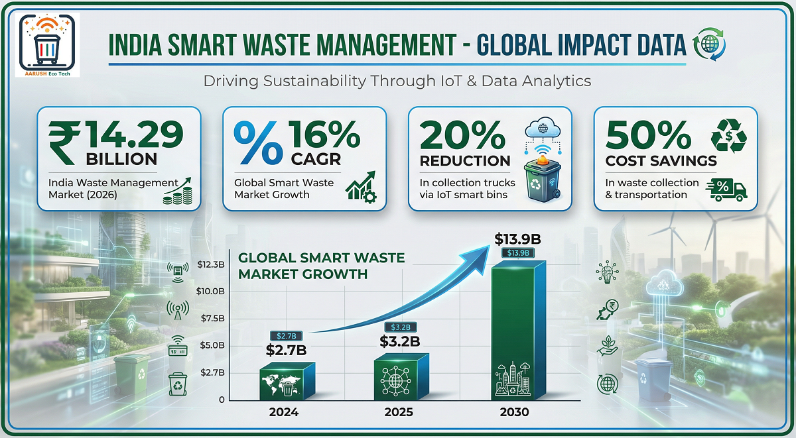
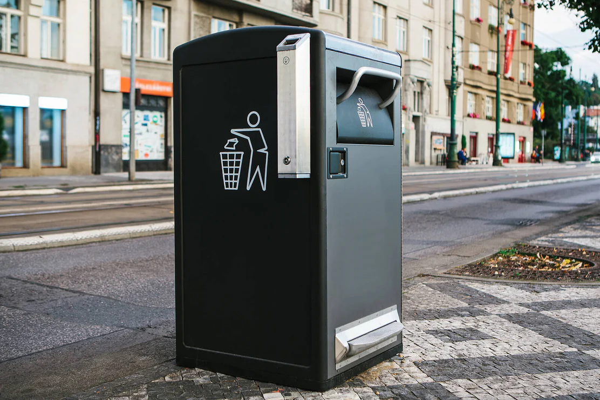

The global waste paradox
Across the world, cities and large institutions spend more on waste collection every year—more vehicles, more labor hours, more contracts—yet familiar problems persist: overflowing bins, missed pickups, inefficient routes, rising emissions, and public dissatisfaction. For decades, waste management has been treated as a necessary service rather than as critical urban infrastructure.
The paradox is simple: waste systems grew in scale, but not in intelligence. Decisions were based on static schedules and historical averages, not on real conditions on the ground. As cities densified and consumption patterns changed, this "blind" model quietly reached its limits.
What finally shifted the trajectory in several successful systems was not a dramatic overhaul of the entire waste chain—but something far more practical: making the first mile of waste visible.
Why traditional bins quietly fail cities
Conventional waste bins are passive objects. Once placed, they provide no information until a truck arrives. This creates three structural problems:
- No visibility – Managers cannot see which locations are overflowing and which are half-empty.
- No accountability – Performance is measured by trips made, not outcomes achieved.
- No adaptability – Routes and schedules remain fixed even when demand fluctuates dramatically.
Over time, this leads to unnecessary collections, excess fuel use, higher labor costs, and avoidable emissions. Importantly, none of this failure is obvious on a day-to-day basis—it accumulates quietly, making it harder for decision-makers to justify change.
When waste became measurable
In cities and enterprises that later achieved strong results, a common turning point emerges: the moment waste became measurable at the point of disposal.
Smart bins—equipped with basic sensing and connectivity—introduced something fundamentally new. They transformed bins from static containers into data-generating infrastructure. For the first time, operators could see:
- How quickly waste accumulated at specific locations
- Which areas consistently overflowed
- Where collections were happening too early or too late
In mature deployments, smart bins did not replace existing systems overnight. Instead, they acted as the first intelligence layer—a practical, politically feasible entry point into data-driven waste management.
What successful systems actually achieved
Long-running, scaled deployments across global cities and large institutions show consistent outcome patterns when smart bins are integrated into operations:
Proven Results from Deployed Systems
- 20–40% overall waste reduction over time in city-wide programs that combined smart monitoring with policy and operational changes
- 30–50% collection efficiency gains, driven by dynamic routing instead of fixed schedules
- 50–80% operational efficiency improvements in dense urban environments, with fewer unnecessary truck trips
- 80%+ reduction in overflow incidents, significantly improving cleanliness and public satisfaction
- Lower emissions, as optimized routes reduced vehicle kilometers traveled and idling time
These results were not achieved through hardware alone. They emerged because smart bins made inefficiencies visible—and therefore manageable.



Cities such as Seoul, New York City, and multiple boroughs of London illustrate this pattern: once waste data entered daily operations, performance metrics shifted from "bins emptied" to cost per ton, service reliability, and environmental impact.
Why smart bins worked where other technologies didn't
A key lesson from successful systems is that governance mattered more than gadgets.
Smart bins delivered impact when they were embedded within the right management frameworks:
- Outcome-based service models – Payments and contracts tied to performance metrics such as overflow rates or response times, not just asset counts
- Clear data ownership – Waste data treated as an operational asset, not as a by-product
- Dynamic decision-making – Managers empowered to adjust routes and priorities based on real-time conditions
- Cross-department coordination – Sanitation, operations, and finance teams aligned around shared efficiency and sustainability goals
In this context, smart bins succeeded because they changed how decisions were made. They shifted organizations from reactive clearance to predictive optimization.
What smart bins are not
It is equally important to be clear about what smart bins do not represent.
- They are not a silver bullet that fixes waste problems on their own
- They are not useful if treated as standalone gadgets without operational follow-through
- They are not substitutes for governance, workforce training, or policy alignment
This clarity is precisely why smart bins have endured where more complex, top-down smart city technologies have struggled. Their value lies in simplicity and focus: they address a real operational blind spot at the very start of the waste chain.
Why smart bins remain a ray of hope today
Among many smart city concepts, smart bins stand out for one reason: they have sustained proof of impact.
They are:
- Practical – Easy to understand and deploy incrementally
- Scalable – Effective in cities, campuses, airports, and business districts
- Politically feasible – Visible benefits without radical disruption
- Operationally grounded – Directly linked to day-to-day outcomes
In an era where cities and enterprises are under pressure to deliver measurable ESG results, smart bins represent a rare convergence of feasibility and effectiveness. They make waste systems smarter not by adding complexity, but by introducing visibility where none existed before.
Looking forward
As waste management increasingly shifts from a background service to a core infrastructure function, the lesson from successful systems is clear: intelligence at the first mile matters. Smart bins, when embedded within thoughtful governance and operational models, have repeatedly proven to be the catalyst for broader system improvement.
Organizations exploring similar outcomes are increasingly seeking partners who understand real-world systems and long-term operations—not experimentation.